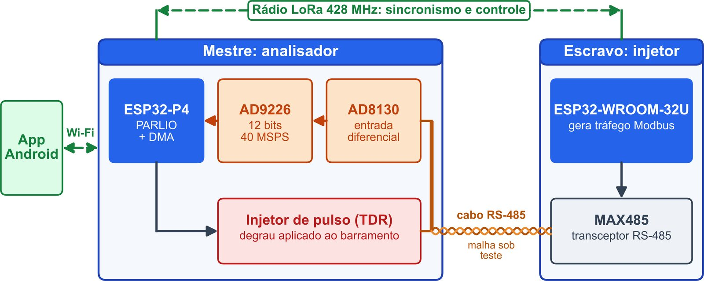
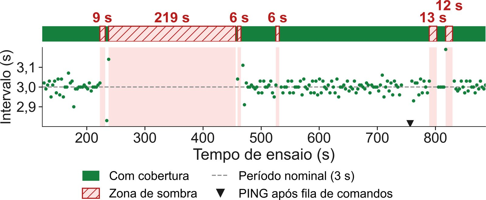
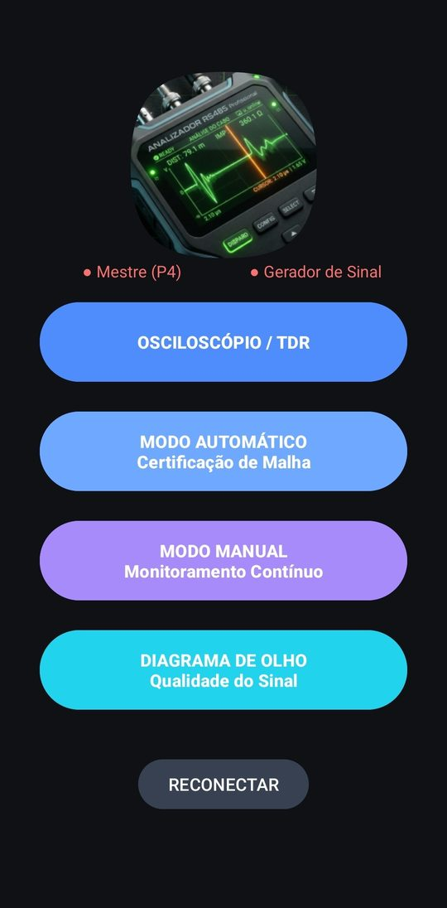
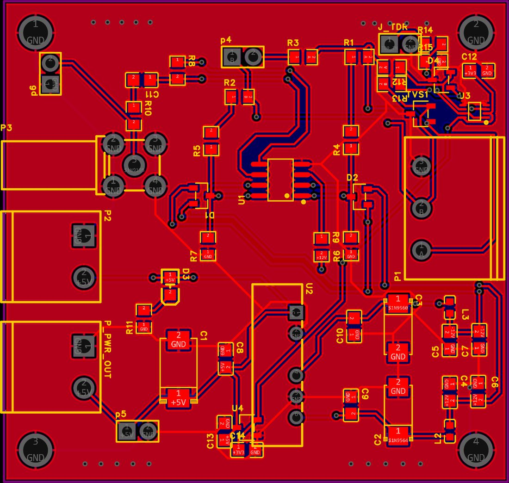

Falhas intermitentes nascem no cabo
Em redes Modbus RTU sobre RS-485, a maior parte das falhas intermitentes vem da camada física: cabo esmagado na obra civil, resistor de terminação ausente, derivação longa e ruído de acionamento de motores.
Em campo, o diagnóstico ainda é feito por inspeção visual do cabeamento. As alternativas são conversores USB, que não enxergam a forma de onda, ou osciloscópios industriais portáteis, de alto custo e que exigem mão de obra especializada.
Um instrumento portátil e de baixo custo
Desenvolver e avaliar experimentalmente um analisador que, em um só equipamento:
- certifique a integridade do sinal elétrico do barramento;
- localize a falha no cabo por refletometria no domínio do tempo (TDR);
- valide o tráfego Modbus;
- tenha o resultado comparado com a inspeção tradicional.
Hipótese: é possível reunir essas funções com custo inferior a R$ 600,00 por unidade em produção em escala.
Mestre, escravo e aplicativo

Mestre (analisador)
ESP32-P4 lendo o conversor AD9226 de 12 bits a até 40 milhões de amostras por segundo, por entrada paralela com acesso direto à memória. Janela de 16.384 amostras e taxa ajustável de 100 kHz a 40 MHz. Um injetor aplica um degrau ao cabo para a refletometria.
Escravo (injetor)
ESP32-WROOM-32U gerando tráfego Modbus configurável pelo transceptor MAX485, na outra ponta do cabo.
Rádio e aplicativo
As duas pontas se coordenam por rádio LoRa em 428 MHz, sem depender da rede da planta. O operador comanda tudo por um aplicativo Android ligado ao mestre por Wi-Fi.
Cinco iterações de protótipo
Pesquisa de desenvolvimento experimental. Cada protótipo foi encerrado por um conjunto de ensaios, e o resultado definiu o que mudar na versão seguinte.
- 1.0 · Cadeia digitalfirmware, servidor WebSocket e aplicativo testados com amostras sintéticas, antes de o conversor chegar.
- 1.1 · Outra plataformacaptura pelo periférico de câmera de um microcontrolador mais barato. Reprovada: nenhum byte capturado.
- 1.2 · Conversor físicocadeia analógica completa e escala de 5,0 mV por código. O enlace por Wi-Fi entre as pontas foi reprovado para campo.
- 1.3 · Rádio LoRasincronismo por rádio dedicado, ensaiado em bancada e em ambiente industrial.
- 1.4 · Configuração atualjanela de 16.384 amostras, taxa ajustável e aplicativo com seis telas; ensaios de refletometria em andamento.
O que já foi medido

No ambiente industrial, o rádio teve cobertura em 65,3 % do tempo, com seis zonas de sombra, a maior de 218,8 s. Dentro da cobertura, todos os quadros chegaram íntegros, e a recuperação depois de cada sombra foi automática.

Cadeia de aquisição validada
Do cabo à tela do aplicativo, com resolução temporal de 25 ns a 40 milhões de amostras por segundo.
Refletometria em ensaio
Esperado: resolução espacial de 2,5 m, erro de localização inferior a 2,5 m e coeficiente de reflexão próximo de +1 em linha aberta e de −1 em curto-circuito.
Rev 1.1: entrada e injetor TDR na mesma placa

A placa recebe o par A/B do barramento e entrega o sinal ao conversor. A revisão 1.1 trouxe:
- injetor de pulso por buffer tri-state (SN74LVC2G126), que fica em alta impedância em repouso e não interfere na captura Modbus;
- proteção de surto por um SM712, de menor capacitância, no lugar de três SMAJ12CA, para não arredondar o degrau do TDR;
- resistor de terminação de 120 Ω ligado direto em A e B;
- pino de habilitação do AD8130 corrigido para +12 V;
- regulador de 3,3 V próprio para o injetor.
A arquitetura se sustenta
O enlace de rádio não registrou nenhum quadro corrompido porque três proteções independentes se somam: a correção de erro da modulação, o filtro de endereço feito pelo próprio módulo e a verificação cíclica na aplicação.
O custo de materiais em escala, de R$ 376,32, fica abaixo do limite de R$ 600,00 da hipótese. A comparação é com o preço de venda de produtos acabados, então o que vale é a ordem de grandeza.
Aplicações
- Certificação da malha RS-485 na entrega de obra e no comissionamento, com registro do ensaio no lugar de laudo por inspeção.
- Localização de falha no cabo a partir de um único ponto de acesso.
- Ensaio de malhas com as pontas distantes, sem prender o operador a um painel.
Próximos passos
Montar a placa Rev 1.1, concluir os ensaios de refletometria, integrar o instrumento em placa única e isolar galvanicamente a entrada.
Quer saber mais?
Converse com o autor no pôster ou pelo LinkedIn.